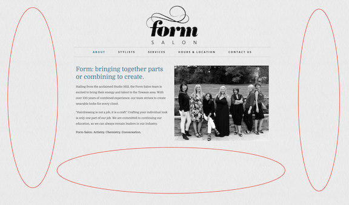

The primary purpose of this assignment is to compare and contrast two websites. A website is one of the most critical parts of a business today. It can bring in new clients and making additional services available to existing clients through increased awareness of all the services it has offer. Both websites are for local hair salons aimed at the same demographics in the Baltimore, Maryland area. Crafted Hair Salon is a full-service salon that creates avant-garde hair to the precision of Vidal Sassoon cuts for all hair types in a top-to-bottom recycled, environmentally conscious, zero paper trail, and 100% wind powered environment. Form Salon brings their energy and talent to the Towson area. With over 100 years of combined experience, the team strives to create wearable looks for every client. We will examine these two websites in terms of their basic design principles, color theory, and usability.
Both websites properly implemented the principle of alignment. Both Form and Crafted left aligned their elements. They both grouped related elements in a clear and logical manner, making it easier and faster for visitors to absorb the information. Both websites make great use of repetition as it helps with reinforce the relationships between elements. An example of this is how both websites handles the color teal. Anywhere there’s teal, it directs visitors’ attention to something important. Similar elements in the hierarchy look similar and both salons maintain their consistency throughout their respected website.Visitors might notice that Form has too much white space on the outside of the content area. The biggest issue here is an unmistakable sense of emptiness. There’s a huge space all around that simply feels underutilized.

Crafted took advantage of grid-based layout with appropriate gutter sizes and allows for room between sections which enforces the implementation of proximity.
Aesthetically, Form design is clean and minimalistic. The overall theme is simple and straightforward. The logo is generic. The color scheme is calming. The use of grey, black, and teal complement each other and makes the site easy on the eyes. The images are in black and white to carry out the color scheme. While the contrast and balance of colors are great, it come across as being a bit boring and doesn’t offer much in the way of vibrancy.
Upon landing on Crafted’s home page, visitors are greeted with a big, beautiful slideshow of people with great hairdos. Upon further inspection, the people in those photos are actually stylists of Crafted Hair Studio which makes it more genuine and more appealing to visitors. This animated content area increases the effective and usability of the overall UI, making it more than just simple eye candy. Crafted also makes great uses of imagery. Anytime there’s a large chunk of text, there’s some sort of visuals to help carry that content and add visual interest to the page. Crafted uses a very similar color scheme to Form, but with slightly bolder, more vibrant colors. The colors complement each other very well, making for an eye-catching experience that feels elegant and modern. The logo is beautifully designed. The contrast between black and white makes make it pop and unforgettable. In addition to the grey, black, and teal, it uses orange sparingly to give the spotlight to all of the stylists.
Both websites share many usability commonalities. They both have content relevant to the business. Both websites are built to be responsive and are mobile-friendly. Information are organized hierarchically, from general to specific topics. Each page is clearly labeled with a descriptive and useful title that makes sense. Call to action buttons are clearly labeled and there are no ambiguous “CLICK HERE” links. Although, the loading time for Crafted takes several seconds longer than Form. Perhaps because Crafted has much more content on the website. But Crafted redeemed themselves by also putting the navigation menu in the footer.
Overall, both websites are user-friendly, professional, intuitive, attractive, easy to navigate, and has sufficient content. Form Salon takes a more traditional approach by having a simple website and displaying their services. It is hard to know when Form Salon last updated their website without a footer and copyright information. Crafted Hair Studio took a much more modern approach. Not only did they displayed their services, they went above and beyond to connect with their demographics throught their implementationof the key principles of design, color theory, and usability.